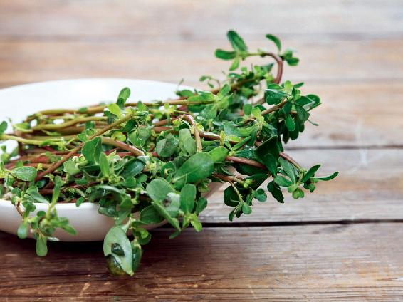
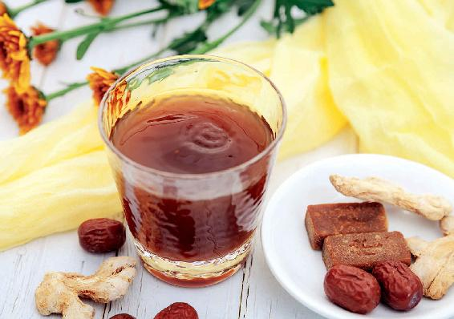

立秋后，气温可能还没有什么变化，我们的身体就已经感觉到了秋天的气息。
有的朋友会在这段时间半夜醒来，然后再难睡着；有的朋友可能会发现自己的大便不成形，还会拉肚子。
原因就是夏天的时候，我们没有很好地排出体内的寒湿，再加上贪凉，吃了很多生冷的东西。
拉肚子其实不是一件小事儿，因为它不仅关系到我们的肠道，也关系到我们的肺系统，关系到肾脏系统的健康。
如今逐渐增多的肠道病，成了现代人的一种“文明病”。现在，肠道息肉和肠道癌的发病率是越来越高了。
现代人不断增多的肠道病跟长期食用冰箱内的生冷食物有非常大的关系。所以，反复、长期拉肚子和肚子痛的朋友，一定要注意预防肠道病变的发生。
如果您在秋天的时候发现自己经常拉肚子，千万不要把它当成一个小问题来对待，如果不及时去处理，就有可能演变成一个大问题。
秋天经常拉肚子跟夏天身体被寒湿所伤有很大关系。但每一个人的体质不同，诱发拉肚子的因素也会不同。
秋天都容易发作哪几种类型的腹泻呢？怎么防治呢？
第一种是吃了不干净食物后发生急性腹泻
吃了不干净的东西导致的急性腹泻或者急性肠炎。它们都有一个共同的特点，就是大便的颜色非常黄，而且气味非常浓重。
这种急性腹泻一旦发作，就会非常着急地想去上厕所，而且完事后还觉得难受，总觉得没有排干净。这种情况下，多患有急性肠炎，大家可以准备新鲜、干净的马齿苋，然后加上一点蒜泥，再放上一点盐、醋、白糖，凉拌后当成凉菜直接吃就可以了。
注意！马齿苋不用焯水，直接洗净后凉拌吃就可以。
如果您并没有得肠炎，只是想预防一下，那您就需要把它焯一焯水，因为直接生吃的话，容易引起拉肚子。
有的朋友肯定要奇怪了，为什么急性肠炎要用凉拌生马齿苋来调理？
这是因为急性肠炎是肠道里有了湿热毒导致的，而吃生拌马齿苋，可以尽快排出这种湿热毒。

虽然这可能导致腹泻量暂时加大，但是它也会把毒素在极短时间内排掉。如果肠道里没有了湿热毒，那么人自然就不会拉肚子了。
第二种就是吃了海鲜后发生急性腹泻
吃海鲜引起的腹泻。对于这种腹泻，可以在凉拌马齿苋的时候多放一些大蒜。
因为有些海鲜是比较偏寒性的，多放一些大蒜可以去掉这种寒性。这样调理腹泻的效果会更好。
而肠道有问题的人，就会不断地拉肚子，一直调理不好。这说明夏天的时候没有很好地祛寒湿或者是被寒湿所伤了。
其实，当人吃了不干净的东西或者海鲜以后拉肚子，是人体正常的一个排毒现象。身体正常的人拉一两次，把毒排出来以后就好了。
如果在立秋后您发现自己经常拉肚子，我建议您在日历上给自己做一个小笔记，提醒自己来年从立夏开始喝姜枣茶，以好好地排出身体的寒湿。
想要自己的肠道健康，那么在夏天的时候就要把自己保养好。
